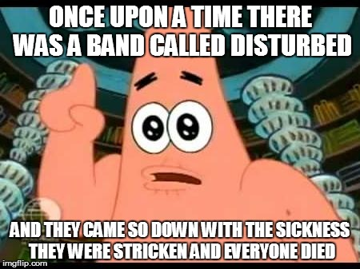
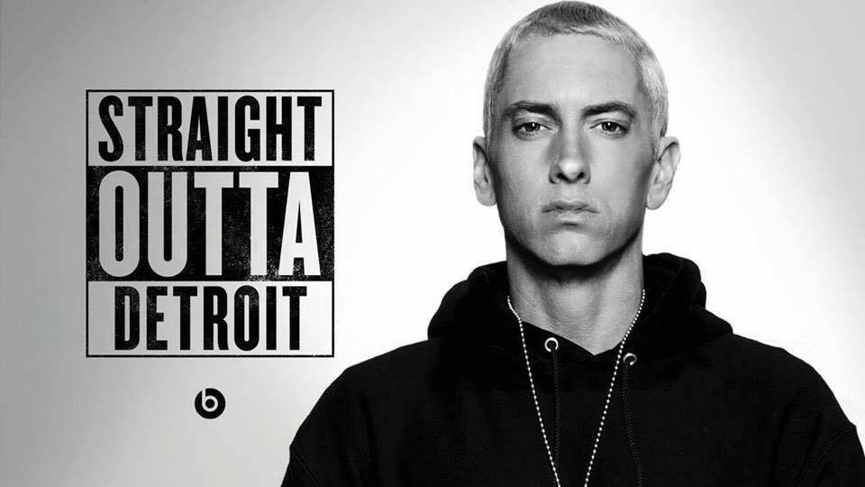
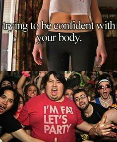
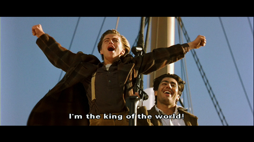

Steve Burnette Stotify Mashup 2016
A Video Experience for Life
Disturbed “Indestructible”
I love Disturbed. While this song is blasting on my sound system, it feels like I am transformed into another person. Feel the rage inside.

Eminem “Rap God”

The power of word use is shown in most of Eminem’s work, but this song especially. “Why be a king when you can be a god?” - Eminem
Daft Punk “Technologic”
This song reminds me of my programing nights, when everyone else has gone to sleep, and I am still chugging along for perfection.
Coldplay “Life in Technicolor II”
Over the years, Coldplay, has seemed to narrate my journey. Not always the lyrics, but the way the songs feel after experiencing them.

Afrojack | Steve Aoki “No Beef”
I love to do all of my more creative projects and such to EDM. I found that this genre really holds a theme in my days. I feel unstoppable.
Calvin Harris “Flashback”
A part of making our lives digital is the process of making everything permanent. I want all of my work to be found in years to come.
The Word Alive “2012” KC Blitz remix
There are many unexplainable events in the world, one is how I like this song. I don’t understand it, but it just works.
Chris Brown “Don’t Judge Me”
Being judged is something I am use to and honestly, switching from engineering to communications hasn’t helped. But, I am happy now.
My Chemical Romance “The Black Parade”
This is for my fight to become some sort of leader for my family. I strive to be seen as a role model because my kids and wife deserve it.
Flobots “Handlebars”
Something many people don’t see in me is my silliness and this Flobots always seems to remind me of what I will always have inside.
Chris Brown “Turn up the music”

Get excited! We live in a time where technology is pivotal in our futures. We are blessed with resources that so many could only dream of.
Tommy Trash “Wake the Giant”
My new love affair with film making and web design has woken the giant inside me. I live for the next project and challenge.
David Guetta “The World is Mine”
I have the tools and resources to tackle my world. David Guetta has been a leader in music for years, and there is a reason for it.
